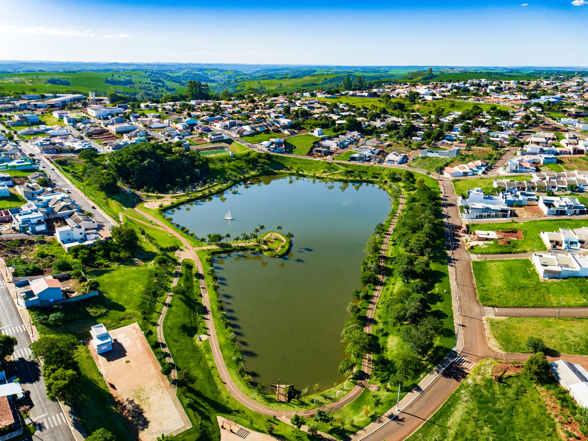
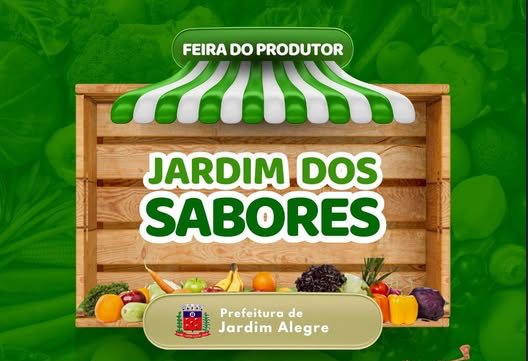
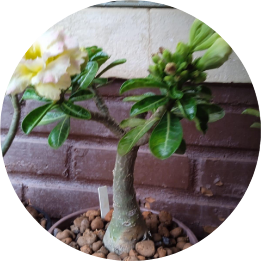
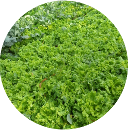
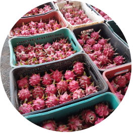
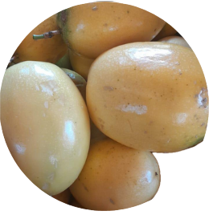

Paraná amplia participação na produção nacional de grãos
"Agro forte, futuro sustentável: equilíbrio entre produção e meio ambiente."
O Paraná é frequentemente citado como uma referência global em sustentabilidade no agronegócio, equilibrando alta produtividade com a preservação de recursos naturais. Em 2026, o estado mantém o título (conquistado por anos consecutivos) de estado mais sustentável do Brasil segundo rankings de competitividade e práticas ESG.


Quando: todas as quartas-feiras. Local: Avenida Paraná, perto do monumento.



